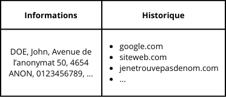

<!DOCTYPE html>
<html lang="fr">
  <head>
    <meta charset="UTF-8" />
    <meta name="viewport" content="width=device-width, initial-scale=1.0" />
    <link rel="stylesheet" href="../src/css/style.css" />
    <script src="/script.js"></script>
    <title>Mon blog</title>
  </head>
  <body>
    <nav-bar></nav-bar>
    <main>
      <aside class="infobar">
        <h3>Blog</h3>
        <p>Publié le : 16 novembre 2024</p>
      </aside>
      <article>
        <aside>
          <h2 class="main-title">
            Les FAI peuvent-ils accéder à notre historique Internet ?
          </h2>
          <p>
            Vous êtes-vous déjà demandé si le site internet que vous consultez
            en ce moment est visible par votre fournisseur d’accès à internet ?
          </p>
          <p>
            Imaginez une grande table contenant, d’un côté, vos informations
            personnelles (nom, prénom, adresse, ...) et, de l’autre, la liste de
            tous les sites que vous avez visités depuis le début de votre
            contrat. Avez-vous songé aux sites que vous avez parcourus jusqu’à
            présent ? 😁
          </p>
          <figure style="width: 60%">
            
          </figure>

          <p>
            Nous allons tenter de distinguer le vrai du faux. Rassurez-vous,
            c’est un peu plus complexe qu’une simple table. Mais il est tout
            aussi fascinant de comprendre que sans certaines bonnes pratiques,
            des tiers pourraient obtenir des informations sur votre trafic en
            ligne.
          </p>
        </aside>
        <aside>
          <h3 class="secondary-title">Le DNS</h3>
          <p>
            <em>Celui qui contrôle le DNS contrôle le monde.</em><br />
            C’est ce que mon professeur de réseau m’avait dit lorsqu’il m’avait
            expliqué le fonctionnement du DNS.
          </p>
          <p></p>
          <p>
            Le DNS (Domain Name System) permet d’accéder aisément aux sites web
            en utilisant leur nom de domaine. Il faut savoir qu’un site web a
            une adresse IP unique, similaire à une adresse postale. Le rôle du
            DNS est de faire le lien entre un nom de domaine et son adresse IP.
          </p>
          <p>
            Par exemple, le blog <em>jenetrouvepasdenom.com</em> pourrait être
            accessible en saisissant son adresse IP directement dans la barre de
            recherche. Le problème, c’est qu’une adresse IP ressemble à ceci :
            <strong>142.250.201.174</strong>. Retenir toutes ces adresses pour
            chaque site web que l’on souhaite visiter est peu pratique. C’est là
            que le DNS intervient, en nous simplifiant la vie et nous permettant
            de retenir des noms plutôt que des suites de chiffres.
          </p>
        </aside>
        <aside>
          <h3 class="secondary-title">Comment fonctionne le DNS</h3>
          <p></p>
        </aside>
      </article>
    </main>
  </body>
</html>
